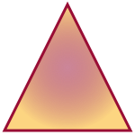

|
The first SVG shows a yellow rectangle with a blue border. This SVG uses <rect>. The start point (the upper right) is at (5px,33px). The width is 140px, and the height is 75px. |
|
|
The second SVG shows a blue circle with a red border. This SVG uses <circle>.The centre of a circle is at (75px,75px),and the radius is 70px. |
|
|  |
The third SVG shows any shape you like using gradient color. I used a <polygon> to define a triangle, but this also can draw other polygons. <polygon> is defined must having three or more points. The color uses the <defs> and <radialGradient> to define it. |
Copyright © Chu-Cheng Li